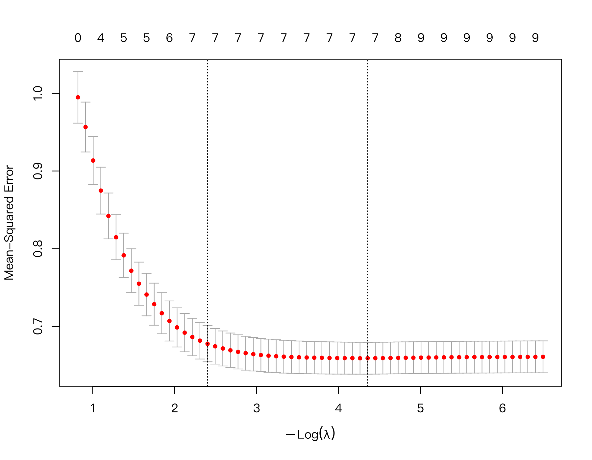
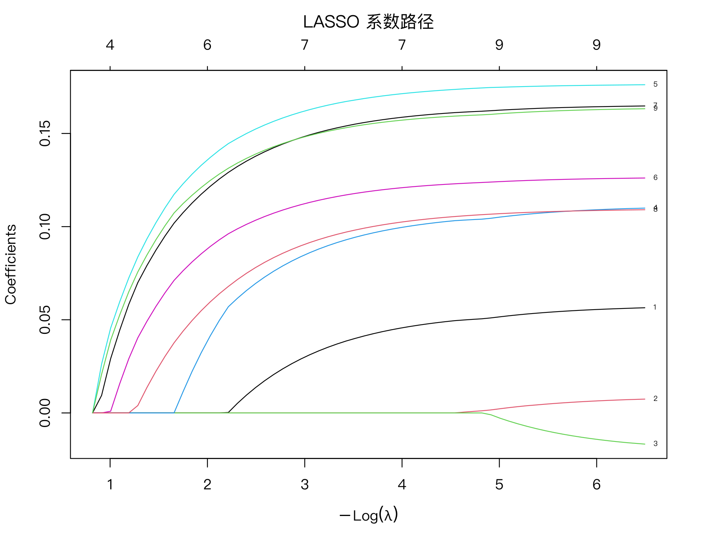
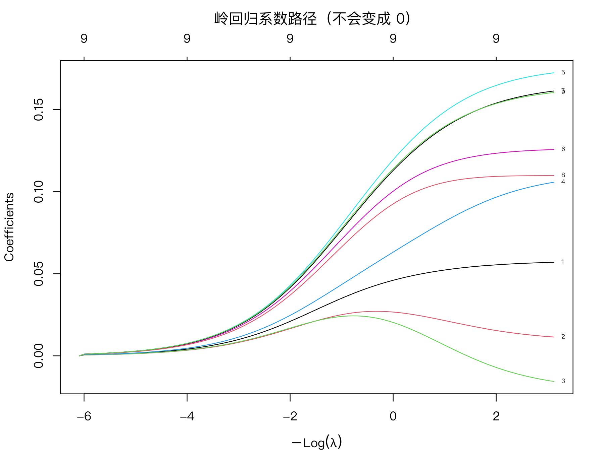

过拟合与正则化：岭回归、LASSO 与交叉验证
本课学习目标
- 理解过拟合：变量多、样本少时模型会“记住噪音”
- 理解 LASSO 通过惩罚系数绝对值，把小系数压缩为 0（自动筛选变量）
- 理解调节参数 λ 与 k 折交叉验证，区分 lambda.min 与 lambda.1se
- 第一次在 R 中运行 glmnet / cv.glmnet
核心概念
- 过拟合overfitting
- 偏差—方差权衡bias–variance trade-off
- 正则化regularization
- 岭回归ridge regression
- LASSOleast absolute shrinkage and selection operator
- 弹性网elastic net
- 调节参数 λtuning parameter, lambda
- 交叉验证cross-validation, CV
- 稀疏性sparsity
本课结构：直觉 → 最少数学 → R 代码 → 理解检查 → 练习 → 小结。文中的交互图示可拖动或点击；测验答错会先给提示，答错两次可查看解析。
① 直觉“背答案”的模型
小李准备社会工作师考试，把近三年的真题和答案全部背了下来，模拟考做往年题拿到满分。可是正式考试换了新题，他只考了 55 分。他学到的不是“规律”，而是“这几套题的偶然细节”。统计模型也会犯同样的错误：过拟合（overfitting）：预测变量多、样本少时，模型会把样本中的随机噪音也当作规律“记住”，在手头数据上拟合得很好（训练误差小），换一批新数据就预测得很差。
上面的组件里，增加模型复杂度（多项式次数）时，训练误差一路下降，而新数据上的误差先降后升。最好的模型不是最复杂的，而是处于中间的那个。这就是偏差—方差权衡（bias–variance trade-off）：
- 偏差（bias）：模型太简单，系统性地错过了真实规律（例如用直线拟合 S 形）。
- 方差（variance）：模型太灵活，换一个样本，估计结果就大变样（追逐噪音）。
简单模型偏差大方差小，复杂模型偏差小方差大。我们要找的是让新数据上总误差最小的平衡点。
CLPN 为什么需要担心过拟合？
CLPN 中每个 T2 节点都用全部 T1 节点来预测。9 个节点就要估计 9 × 9 = 81 条有向边；20 个节点就是 400 条。很多真实的边可能是 0 或接近 0，但普通回归（OLS）会给每条边一个非零估计，其中不少只是噪音。3.2 课练习中你已经看到：明明总体目标值里 lone4 → dep1 几乎是 0，OLS 却给了 0.09。画成网络图，图上会布满细碎的“假边”，让人误以为一切都和一切相连。
正则化：给系数“收税”
正则化（regularization）的思路：在“拟合误差”之外，再对系数的大小加一个惩罚。模型要想给某个变量一个大系数，这个变量带来的拟合改善就必须超过惩罚。
想象每个系数都要交税，系数越大税越高。真正有用的变量（带来大量拟合改善）交得起税，保留下来；只能带来一点点改善的变量（多半是噪音）不值得交税，系数被压小甚至压成 0。“税率”就是调节参数 λ（tuning parameter, lambda）：λ = 0 不收税，就是普通回归；λ 很大，所有系数都被压为 0。
两种常见的“税制”：
- 岭回归（ridge regression）：按系数的平方收税。所有系数都被等比例“压小”，但不会正好变成 0。
- LASSO（least absolute shrinkage and selection operator）（Tibshirani, 1996）：按系数的绝对值收税。小系数会被压到正好为 0，相当于自动筛选变量。只保留少数非零系数的性质叫稀疏性（sparsity），画出来的网络更容易读。
- 弹性网（elastic net）：两种税的混合，在 R 中用参数
alpha控制（alpha = 1 为 LASSO，alpha = 0 为岭回归，中间值为混合）。
（该组件用“预测变量彼此不相关”的简化情形示意 LASSO 的软阈值与岭回归的等比例收缩，数字是示意值；真实数据的路径见下方 R 输出图。）
λ 取多大？交叉验证
λ 太小，等于没惩罚，过拟合；λ 太大，真实的边也被压掉。怎么选？不能用“训练误差最小”来选（那永远是 λ = 0）。要模拟“新数据”：交叉验证（cross-validation, CV）。
- 把 800 人随机分成 10 份（每份 80 人）。
- 拿出第 1 份当“新数据”，用其余 9 份对每一个候选 λ 拟合 LASSO，然后在第 1 份上计算预测误差。
- 轮流让每一份都当一次“新数据”，重复 10 次。
- 对每个 λ，把 10 次误差取平均。平均误差最小的 λ 叫
lambda.min。
还有一个更保守的选择：lambda.1se，即在“误差不比最小误差高出 1 个标准误”的范围内，选最大的 λ。理由：λ.min 附近的误差差别往往只是随机波动，既然预测得差不多好，不如选更简单（更稀疏）的模型。所以 lambda.1se 惩罚更重，保留的系数更少或更小，更“保守”。
- 先标准化。惩罚针对系数大小，而系数大小依赖于单位（3.3 课）。不标准化的话，单位大的变量系数小、交的税少，惩罚不公平。
glmnet默认会在内部标准化（standardize = TRUE）再把系数换回原单位；课程中我们直接用scale()先把所有变量标准化，得到的系数可直接比较。 - 交叉验证有随机性。分组是随机的，不同的随机种子可能选出略有不同的 λ，所以要
set.seed()以便复现，并且要明白“刚好在边界上的边”本身就不稳定（第 8 模块的 bootstrap 会处理）。
LASSO 把某条边压为 0，意思是：在这个样本量和这个惩罚强度下，这条边带来的预测改善不足以“交税”。真实的边可能存在但很弱，或者样本不足以把它和噪音区分开，或者它的作用被与之高度相关的另一个节点“抢走”了（共线性，3.2 课）。所以报告时应说“未被估计为非零”，而不是“两者没有关系”。LASSO 还会把保留下来的系数也往 0 收缩（偏小），这是它用一点偏差换取较小方差的代价。
② 最少数学带惩罚的最小二乘
普通回归最小化残差平方和。LASSO 最小化：
- \(y_i-\hat y_i\)
- 第 \(i\) 个人的残差。
- \(\beta_j\)
- 第 \(j\) 个预测变量的系数（标准化后）；截距不受惩罚。
- \(|\beta_j|\)
- 绝对值。
- \(\lambda\ge0\)
- 惩罚强度；λ = 0 时就是 OLS。
- \(p\)
- 预测变量个数。
岭回归把 \(|\beta_j|\) 换成 \(\beta_j^2\)：
为什么绝对值能把系数压到正好 0，平方却不能？用微积分直觉看边际：平方惩罚 \(\lambda\beta^2\) 的导数是 \(2\lambda\beta\)，当 \(\beta\) 接近 0 时，“再压小一点”的边际收益也趋于 0，所以没必要压到正好 0。绝对值惩罚 \(\lambda|\beta|\) 的斜率始终是 \(\lambda\)（不随 \(\beta\) 变小而变小）：只要变量带来的拟合改善的边际值小于 \(\lambda\)，最优解就停在 0。在预测变量互不相关的简化情形下，LASSO 解就是“软阈值”：\(\hat\beta_j^{\text{LASSO}} = \operatorname{sign}(\hat\beta_j^{\text{OLS}})\max(|\hat\beta_j^{\text{OLS}}| - c\lambda,\,0)\)，其中 \(c\) 是与标度有关的常数：小于阈值的系数直接变 0，大于阈值的减去一个固定量。
注：glmnet 实际的目标函数把拟合误差写成 \(\frac{1}{2n}\sum(y_i-\hat y_i)^2\)，惩罚写成 \(\lambda[\frac{1-\alpha}{2}\sum\beta_j^2+\alpha\sum|\beta_j|]\)（Friedman et al., 2010）。只是 λ 的标度不同，道理一样。
③ R 代码第一次运行 cv.glmnet
对应脚本：R/L3-5.R。用 9 道 T1 题目预测 T2 抑郁总分。这和 CLPN 中的一个方程结构相同，只是结果变量换成了总分。
source("R/_setup.R")
library(glmnet)
dat <- read_course_data()
predictors <- vars_t(1) # 9 道 T1 题目的列名
dat$depress_t2 <- rowSums(dat[, paste0(dep_items, "_t2")])
X <- scale(as.matrix(dat[, predictors])) # glmnet 要求矩阵；先标准化
y <- scale(dat$depress_t2)[, 1]
set.seed(2026) # 交叉验证会随机分组，所以要设种子
cvfit <- cv.glmnet(X, y, alpha = 1, nfolds = 10) # alpha = 1 即 LASSO；alpha = 0 即岭回归
plot(cvfit) # 交叉验证误差随 log(λ) 变化
cat("lambda.min =", signif(cvfit$lambda.min, 3), "；lambda.1se =", signif(cvfit$lambda.1se, 3), "\n")
print(round(cbind(lambda.min = coef(cvfit, s = "lambda.min")[, 1],
lambda.1se = coef(cvfit, s = "lambda.1se")[, 1],
OLS = coef(lm(y ~ X))), 3))lambda.min = 0.0128 ；lambda.1se = 0.0906
lambda.min lambda.1se OLS
(Intercept) 0.000 0.000 0.000
lone1_t1 0.048 0.010 0.058
lone2_t1 0.000 0.000 0.009
lone3_t1 0.000 0.000 -0.021
lone4_t1 0.102 0.066 0.111
dep1_t1 0.173 0.150 0.177
dep2_t1 0.122 0.101 0.127
dep3_t1 0.160 0.135 0.165
dep4_t1 0.105 0.075 0.110
dep5_t1 0.159 0.137 0.164- OLS 给每个题目都分配了非零系数，包括
lone3_t1的 −0.021（与人隔绝“负向”预测抑郁？很可能只是噪音）。 - λ.min 把
lone2和lone3压为 0，其余系数都比 OLS 略小（收缩）。 - λ.1se（更大的 λ = 0.0906）进一步收缩：
lone1只剩 0.010，其他系数也更小。在这个例子中两种 λ 保留的变量个数恰好相同（7 个），但 λ.1se 的系数整体更小。“更保守”既可以体现在压掉更多变量，也可以体现在收缩更多。 - 结果变量是抑郁总分，所以抑郁题自己的预测作用（相当于“自回归”）最强，这符合预期。

plot(cvfit)。横轴为 log(λ)，纵轴为交叉验证的均方误差（红点）及其误差条；两条竖虚线分别标出 lambda.min 和 lambda.1se；图顶部的数字是对应 λ 下非零系数的个数。fit <- glmnet(X, y, alpha = 1)
plot(fit, xvar = "lambda", label = TRUE) # 每条线是一个变量的系数随 log(λ) 的变化
ridge <- glmnet(X, y, alpha = 0)
plot(ridge, xvar = "lambda", label = TRUE)

在课程后面，_setup.R 里的 clpn_estimate() 就是对 9 个 T2 节点各运行一次这样的 cv.glmnet()，把 9 组系数拼成一个 9 × 9 的矩阵，就是 CLPN（7.1 课）。
完整例题：手算软阈值
设两个预测变量互不相关、都已标准化，OLS 系数分别是 \(\hat\beta_1^{\text{OLS}} = 0.30\)、\(\hat\beta_2^{\text{OLS}} = 0.05\)。在这种简化情形下，LASSO 解就是 ② 节的软阈值公式；设阈值 \(c\lambda = 0.1\)。
- 第 1 个系数：\(|0.30| - 0.1 = 0.20 > 0\)，符号为正，所以 \(\hat\beta_1^{\text{LASSO}} = 0.20\)。它被保留下来，但整整少了 0.1。
- 第 2 个系数：\(|0.05| - 0.1 = -0.05 < 0\)，取 \(\max(\cdot, 0) = 0\)，所以 \(\hat\beta_2^{\text{LASSO}} = 0\)。它被删掉了。
- 如果第 1 个系数是 −0.30，结果是 −0.20：软阈值先看绝对值，再把原来的符号放回去，所以是“向 0 收缩”，不是“往小里减”。
- 对照岭回归。互不相关时，岭回归把每个系数乘以同一个小于 1 的因子 \(1/(1+c'\lambda)\)。若选一个让 0.30 变成 0.20 的惩罚（因子为 2/3），0.05 就变成约 0.033，变小了，但不是 0。
从这个例子可以读出 LASSO 的三个性质：(1) 收缩量是固定的 \(c\lambda\)，与系数大小无关，所以大系数“相对”被压得少（0.30 少了三分之一），刚过阈值的系数被压得多；(2) 小于阈值的系数直接变 0，这就是变量筛选；(3) 被保留的系数也偏向 0，所以 LASSO 的系数不宜直接当作效应大小的无偏估计。预测变量彼此相关时（真实数据都是这样），没有这样的闭式解，glmnet 用坐标下降法反复迭代，但每一步做的仍是这个软阈值运算。
可以在 R 里验证软阈值公式：
soft <- function(b, t) sign(b) * pmax(abs(b) - t, 0)
soft(c(0.30, 0.05, -0.30), 0.1) # 0.20 0.00 -0.20压为 0 的边可能是真实存在的：lone3 的例子
上面的输出里，lone3_t1（与人隔绝）的 OLS 系数是 −0.021，λ.min 和 λ.1se 都把它压成了 0。按“读这张表”的直觉，这条边像是噪音。但课程数据是模拟的，可以对照总体目标值：在 data/true_B_population.csv 中，“与人隔绝 → 情绪低落”是总体中最强的孤独 → 抑郁边（0.118），与人隔绝到其他四道抑郁题的值接近 0。因为抑郁总分 = 5 道题之和，与人隔绝对 T2 抑郁总分的总体系数也是正的。粗略换算：把题目层面的标准化系数乘以题目的 SD（约 0.93），再除以总分的 SD（约 3.37），得到约 0.03。
也就是说，这里 LASSO 犯的是假阴性（false negative）：总体中存在一个弱的正效应，样本里的 OLS 估计却因为抽样误差落到了 −0.021，被压成 0 合情合理。造成这种结果的原因有三个：效应本身很弱（约 0.03）；它只通过 5 道抑郁题中的 1 道起作用，在总分里被“稀释”了；与人隔绝和另外三道孤独题中等相关，它的“功劳”容易被它们分走（3.2 课练习里的 lone3 与 lone4 就是这样）。真实研究中没有真值表可以对照，所以“压为 0”只能报告为“未被估计为非零”，不能写成“与人隔绝与之后的抑郁无关”。
- 把 LASSO 系数当成效应大小。保留下来的系数也被收缩过（例题中 0.30 变成 0.20）。要报告效应大小，通常在选出变量后另做估计，或者明确说明系数是收缩后的值。
- 把“被保留”当成“真实存在”。被压为 0 的不一定没有关系（上面 lone3 的例子），反过来，被保留下来的也不一定是真效应：练习 3.5-A 里 lambda.min 留下了假变量。
- 只报告 λ.1se 或只报告 λ.min，却不说用的是哪个。两者保留的边可以差很多。方法部分要写明选 λ 的规则，课程的 CLPN 脚本默认用 lambda.min（7.2 用 glmnet 逐节点估计 CLPN）。
④ 理解检查即时测验
一个模型在训练数据上 R² = 0.95，在新数据上 R² = 0.20。最可能的原因是？
- 不能排除，但“训练上极好、新数据上很差”正是过拟合的典型表现，应先考虑它。
- 正确。
- 欠拟合时训练数据上也拟合得不好，R² 不会高达 0.95。
- 样本量小会让新数据上的 R² 估计更不稳定，但不会系统性地从 0.95 跌到 0.20。
为什么要先标准化变量再做 LASSO？
- 正确。
- glmnet 接受任意数值；标准化后的数也不在 0–1 之间。
- 过拟合来自参数多、样本少，换单位不能消除它；防止过拟合靠的是惩罚和交叉验证。
- LASSO 没有这个要求，标准化也不改变分布形状（1.3 课）。
lambda.min 与 lambda.1se 哪个更“保守”（保留更少或更小的系数）？
- λ.min 让交叉验证误差最小，惩罚更轻，保留的系数更多、更大。
- 正确：它是误差在最小值 1 个标准误之内的最大 λ，惩罚更重。
- 课程数据中 λ.min = 0.0128，λ.1se = 0.0906，相差约 7 倍。
LASSO 把系数压到 0，是否意味着两个变量“真的没有关系”？
- 不能证明：本课 lone3 的例子中，总体里存在弱的正效应，LASSO 仍把它压成了 0。
- 惩罚越重，被压为 0 的弱效应越多；换规则不会让“压为 0”变成“证明为 0”。
- 正确。
岭回归和 LASSO 的主要区别是？
- 也需要，同样用交叉验证选；cv.glmnet 设 alpha = 0 即可。
- 正确。
- LASSO 可用于连续结果（本课）和二分类结果（3.4 课的 family = "binomial"）。
- 正好反了：按平方惩罚的是岭回归，所以它只能压小、不能压为 0。
λ = 0 时，LASSO 的结果等于什么？
⑤ 练习动手练习
练习 3.5-A：OLS vs LASSO（模拟数据）
用 15 个预测变量、n = 150 的模拟数据，比较 lm() 与 cv.glmnet() 的系数；画出 LASSO 的系数路径图，并描述 λ 增大时发生了什么。（设定只有前 3 个变量真的有作用，这样你知道“真相”。）
参考代码与结果
library(glmnet)
set.seed(25)
n <- 150; p <- 15
X <- matrix(rnorm(n * p), n, p, dimnames = list(NULL, paste0("x", 1:p)))
beta_true <- c(0.5, 0.4, 0.3, rep(0, p - 3)) # 只有前 3 个变量真的有作用
y <- drop(X %*% beta_true + rnorm(n))
ols <- coef(lm(y ~ X))[-1]
cvfit <- cv.glmnet(X, y, alpha = 1, nfolds = 10)
las <- coef(cvfit, s = "lambda.1se")[-1, 1]
las_min <- coef(cvfit, s = "lambda.min")[-1, 1] # 课程 CLPN 脚本默认用的规则
round(cbind(true = beta_true, OLS = ols, LASSO_min = las_min, LASSO_1se = las), 3)
plot(glmnet(X, y, alpha = 1), xvar = "lambda", label = TRUE)
# 在 1000 个新个体上比较预测误差
Xn <- matrix(rnorm(1000 * p), 1000, p); yn <- drop(Xn %*% beta_true + rnorm(1000))
mean((yn - cbind(1, Xn) %*% coef(lm(y ~ X)))^2) # OLS
mean((yn - predict(cvfit, Xn, s = "lambda.1se"))^2) # LASSO参考结果：OLS 给 15 个变量都分配了非零系数，其中 12 个“假”变量的系数在 −0.27 到 0.10 之间（x9 竟有 −0.272）；LASSO（λ.1se）只保留 x1、x2、x3（0.314、0.355、0.186），其余 12 个全为 0。代价是保留的系数被收缩得比真值小。改用 lambda.min（课程 CLPN 脚本的默认规则）时，LASSO 保留 6 个变量，其中 3 个是假变量：lambda.min 追求预测误差最小，会留下一些假阳性。“自动筛选变量”并不等于只留下真变量；7.2 用 glmnet 逐节点估计 CLPN 会在课程数据上再看到这一点。新数据均方误差：OLS 1.208，LASSO 1.120（OLS 的训练误差只有 0.941，这就是过拟合）。
路径图描述：λ 很小时 15 条线都离开 0；λ 增大，噪音变量的线先回到 0，最后只剩 x1–x3，λ 再大它们也被压为 0。
练习 3.5-B：换一个随机种子
在 R/L3-5.R 中把 set.seed(2026) 改为 set.seed(1)、set.seed(2) 再运行两次，lambda.min、lambda.1se 和被压为 0 的题目有变化吗？这对“某条边是否存在”的结论意味着什么？
提示
参考结果：seed = 1 时 λ.min = 0.0155、λ.1se = 0.120，λ.1se 下 lone1_t1 被压为 0（只剩 6 个非零系数）；seed = 2 时 λ.min = 0.0155、λ.1se = 0.0906，lone1_t1 又以 0.010 回来了。交叉验证分组改变后，λ 的选择会有小幅变化，处在“边界”上的小系数（如 lone1_t1）可能时有时无，而大的系数（抑郁题）稳定存在。结论：不要过度解读刚好被保留或刚好被压为 0 的弱边；第 8 模块会用 bootstrap 系统地评估边的稳定性。
练习 3.5-C：岭回归
把 alpha = 1 改为 alpha = 0 运行 cv.glmnet()，比较 lambda.min 下的系数和 LASSO 的系数。哪些变量在岭回归里仍不为 0？
提示
参考结果（seed 2026）：岭回归 λ.min 下 9 个系数全部非零，例如 lone2 0.017、lone3 −0.003、lone4 0.092、dep1 0.160，lone3 很接近 0 但不是 0。所有系数都不为 0（只是被收缩），这正是“岭回归不做变量筛选”的含义。若你想要稀疏的网络图，用 LASSO；若更关心预测且变量高度相关，岭回归或弹性网可能更稳定。
小结带走三句话
- 变量多、样本少时模型会记住噪音（过拟合）；要看新数据上的误差，而不是训练误差。
- LASSO = 残差平方和 + λ·Σ|β|：小系数被压为 0，得到稀疏网络；岭回归只压小不压为 0。先标准化。
- λ 用 k 折交叉验证选：lambda.min 误差最小，lambda.1se 更保守。被压为 0 不等于没有关系。M3 到此结束，下一模块进入纵向与面板数据：4.1 纵向设计的语言：波次、时间间隔、被试内与被试间。
本模块的核心课到这里学完了。去做 M3 阶段测验，一次答对 70% 及以上再进入下一个模块。
CLPN 从零开始 · 第 3.5 课 · 返回大纲